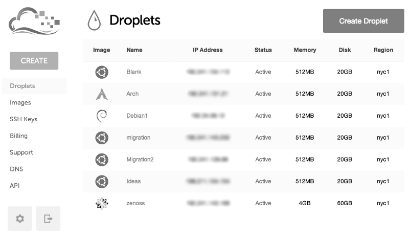

Owning Your Data — Initial Server Setup
Posted on Thu 06 March 2014 in Tech

So before you can move to your own self-hosted services, you'll need your own hosting. This is a really basic tutorial/set of links on getting a server up and running with Salt.
Hosting Provider
DigitalOcean is a terrific hosting company if you're want to play around with a few personal servers. Here's the pro's list.
- It's really cost effective.
- The UI is super basic.
- They have great tutorials for beginners.
How safe is DigitalOcean?
Well, this is a call you'll need to make yourself. They are a New York based hosting company so that's not so good. However, you can deploy droplets(servers) in Amsterdam which CEO Ben Uretsky stated should make snooping harder. It's hardly a ringing endorsement.
Safer alternatives
If you want to go a more untraceable route, look for a hosting provider that'll take Bitcoin. Don't supply any personal information and if possible only connect to the server through a VPN. Here's a few examples.
- BitcoinWebHosting
- NameCheap
- Incloudibly Zurich based making it even safer, but also far more expensive.
Setting Up the Server
DigitalOcean themselves have agreat guide on setting up your first server and do a great job of explaining what the settings mean and the effect they have. Even if you don't go with DigitalOcean it's a recommended read. In terms of settings I'd recommend using Ubuntu 12.04 LTS 32bit or 64bit depending on how much RAM you give your machine. 12.04 LTS is the last Long Term Support release of Ubuntu, so you will get updates till late 2017.
If you're more comfortable with servers Debian is an alternative OS that is admittedly a little safer. Ubuntu contains some proprietary software and potentially unsafe opt-ins but that's mostly pertaining to the desktop. DigitalOcean tends to provide more Ubuntu documentation to beginners so it makes a good starter OS, so you can get comfortable with Ubuntu now then transition to Debian later, with a little help from salt(which I'll go into later).
I'd also recommend going with around 1GB of Ram if you intend to use the server for multiple features, for example mail server, file server, photo sharing etc. The tutorial also goes into how to connect to your box so by the end of the tutorial you should have a server up and running and be connected via the terminal prompt.
Setting up Salt
Salt is an infrastructure management software, but don't let that put you off. We won't be using about 90% of what Salt does, just a few features here and there to get you up to speed faster. To explain, these guides rely on Salt to allow you to quickly configure your servers based on configurations I've already made, there's no need to worry too much about how Salt works. Generally you'll just need to copy certain files and run a command or two, should be pretty straight-forward. Anyway, yet again I'll leverage a DigitalOcean guide. Here's how to install Salt on Ubuntu 12.04.
Done?
Excellent, you're on your way. Checkout here to choose what service you want to swap across to your awesome new machine!